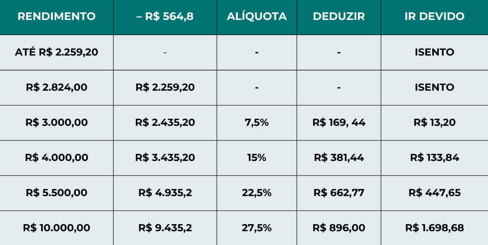

Você sabe o que é IRRF?
O IRRF é a sigla que representa o Imposto de Renda Retido na Fonte, um tributo brasileiro que incide sobre diversos tipos de rendimentos que podem ser pagos a pessoas físicas ou jurídicas. Ele corresponde a uma forma de antecipação do Imposto de Renda devido pelo contribuinte. Com isso, gera descontos fiscais diretamente na fonte pagadora. É por isso que as empresas empregadoras têm um papel central no recolhimento deste tributo. A função deste imposto é assegurar ao governo, desde logo, uma parcela do Imposto de Renda que seria devido pelo contribuinte. Desse modo, busca evitar a sonegação fiscal, ao menos em parte. A base legal para a aplicação do que é IRRF corresponde à Lei n.º 5.172/1966, mais conhecida como Código Tributário Nacional (CTN). Ainda, o imposto segue as diretrizes presentes na Lei n.º 7.713/1988, que trata do Imposto de Renda das pessoas físicas.
Como calcular?
Para efetuar o cálculo da base do Imposto de Renda, é necessário subtrair do salário bruto os valores de Previdência Social, dependentes legais (se houver) e pensão alimentícia (se houver). Por exemplo: se o funcionário, sem dependentes e sem pensão alimentícia tem remuneração bruta de R$ 3.000,00 — sobre a qual incide INSS de R$ 263,06 (12% – alíquota nominal) — à base de cálculo do IRRF será de R$ 2.736,94.
tabela 2024/2025
Qual o prazo para declaração?
Depois de dois meses e meio, termina nesta sexta-feira (31) o prazo para os contribuintes acertarem as contas com o Leão. Acaba, às 23h59min59s a entrega da Declaração do Imposto de Renda Pessoa Física (IRPF) 2024 (ano-base 2023).
Quem é obrigado a declarar?
- Recebeu rendimentos tributáveis acima de R$30.639,90 (salários, aposentadoria, aluguéis...)
- Recebeu rendimentos isentos ou não tributáveis acima de R$200 mil (FGTS, indenização, pensão alimentícia...)
- Teve receita bruta de atividade rural acima de R$153.199,50
- Pretende compensar prejuízos de atividade rural ocorridos em 2023 ou anos anteriores
- Teve ganho de capital na venda de bens ou direitos sujeito a imposto
- Realizou vendas em bolsas com total acima de R$40 mil
- Realizou vendas em bolsa com apuração de ganho líquido em operações day trade
- Vendeu ações em operações comuns na bolsa com total acima de R$20 mil em algum mês do ano anterior
- Possuía bens no valor total acima de R$800 mil
- Passou à condição de residente no Brasil
- Optou por declarar bens controlados no exterior como se fossem pessoais
- Residente no Brasil em qualquer mês até 31 de dezembro
- Tinha titularidade de trust em 31 de dezembro
- Optou pela isenção do Imposto sobre a Renda na venda de imóveis residenciais, aplicando o produto na compra de novos imóveis
- Optou pela atualização a valor de mercado de bens e direitos no exterior